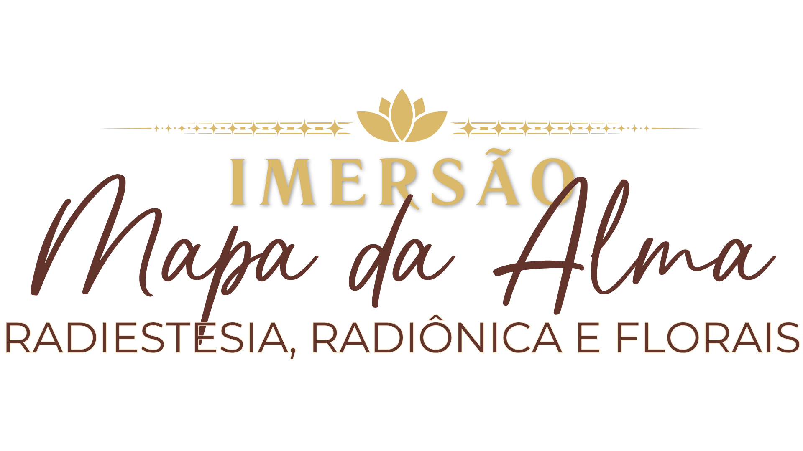
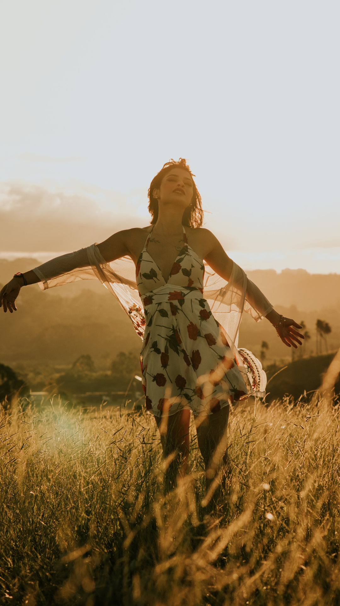
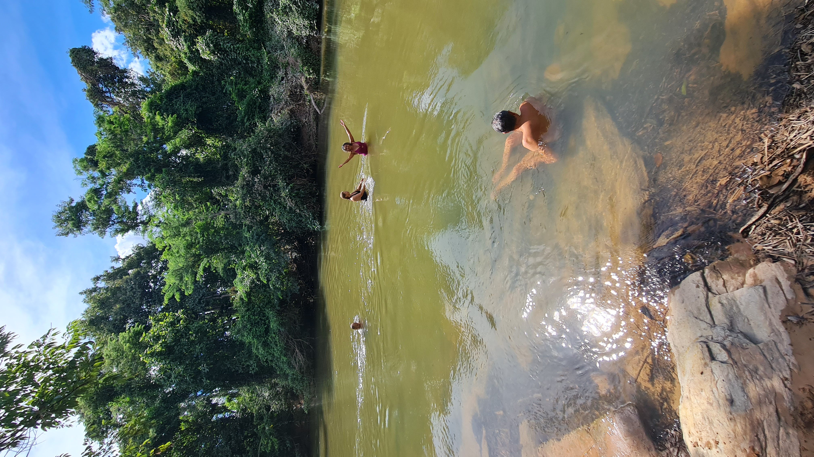
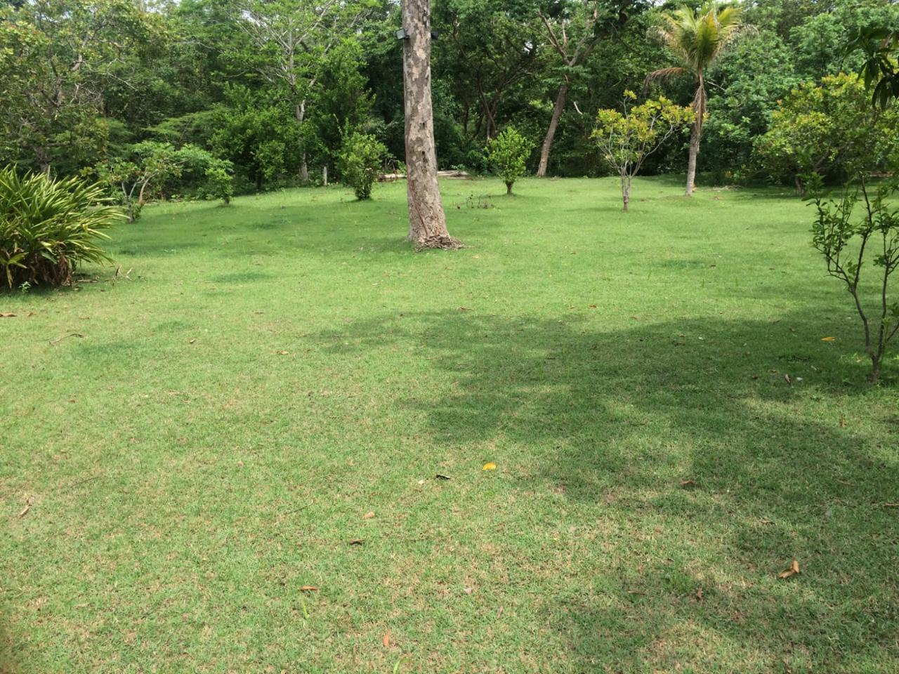
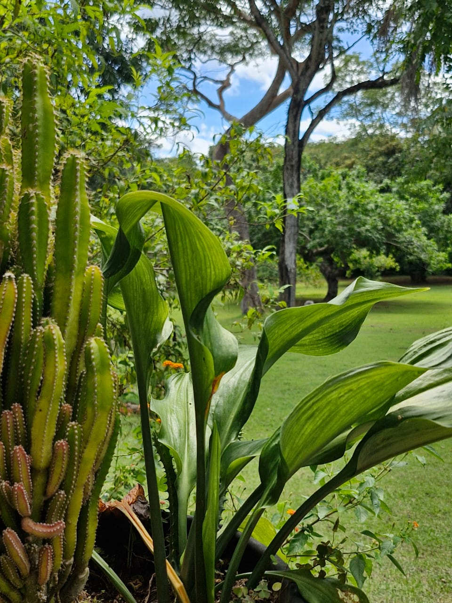
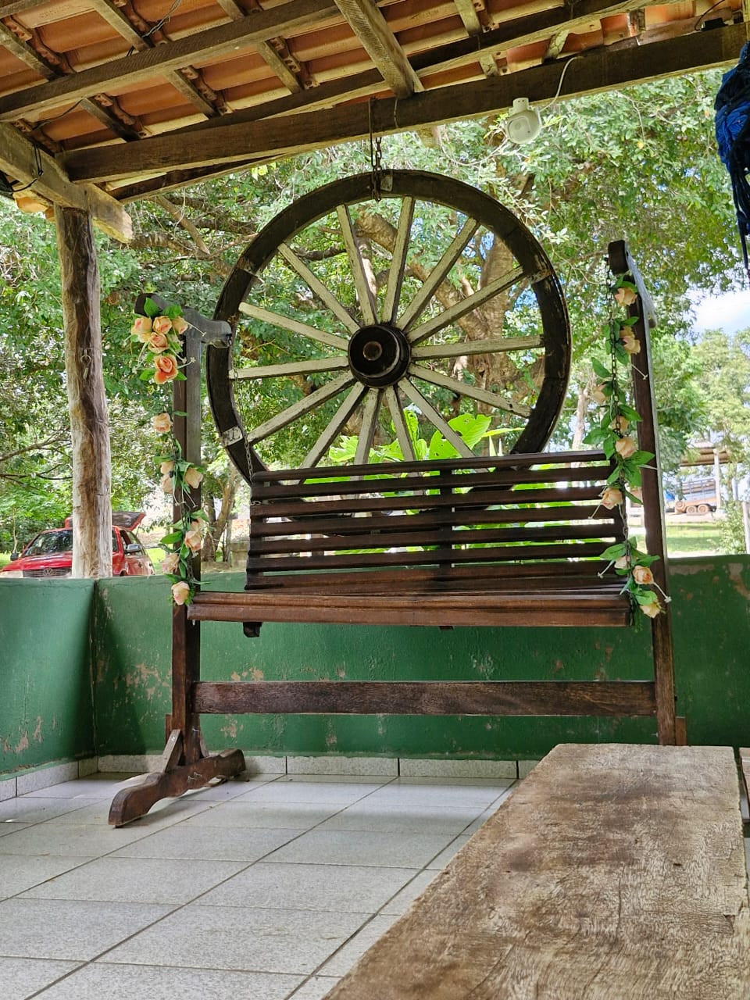
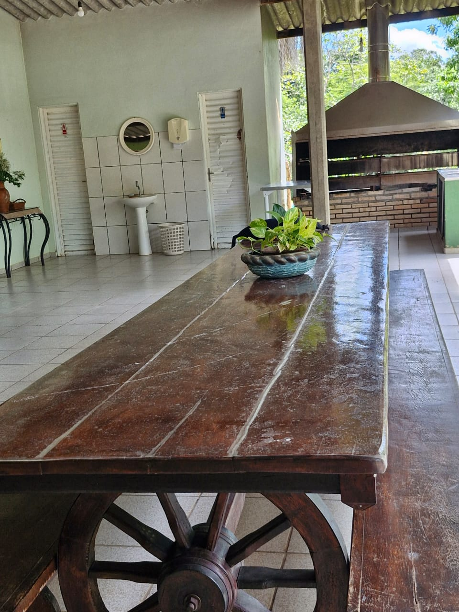
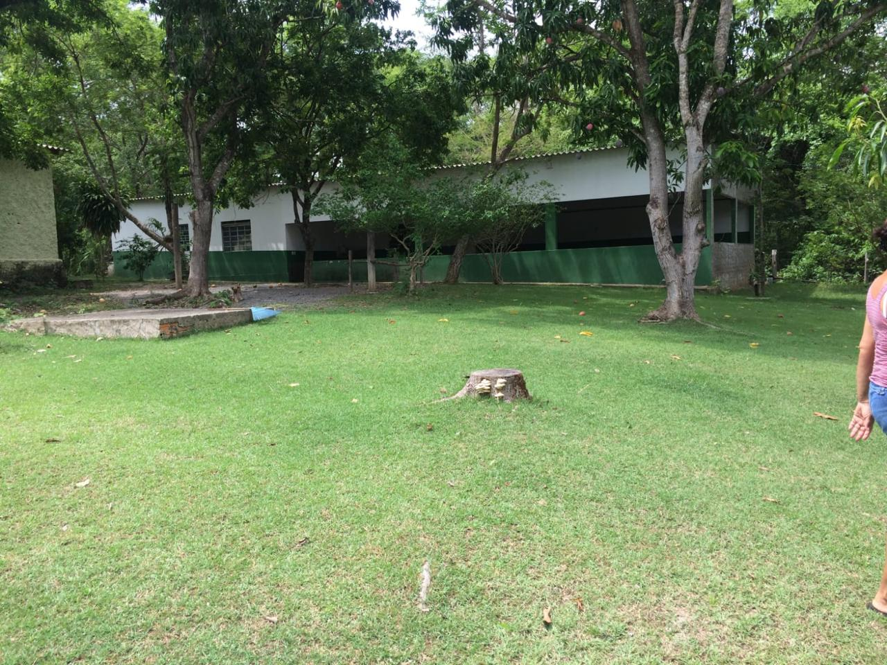
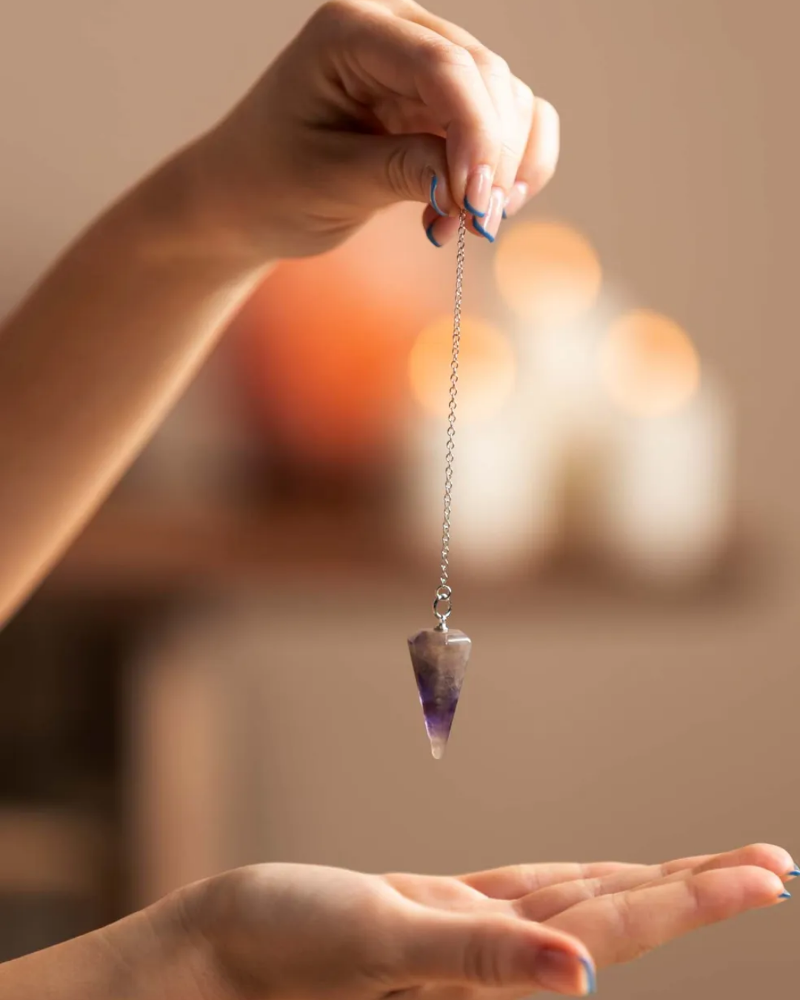
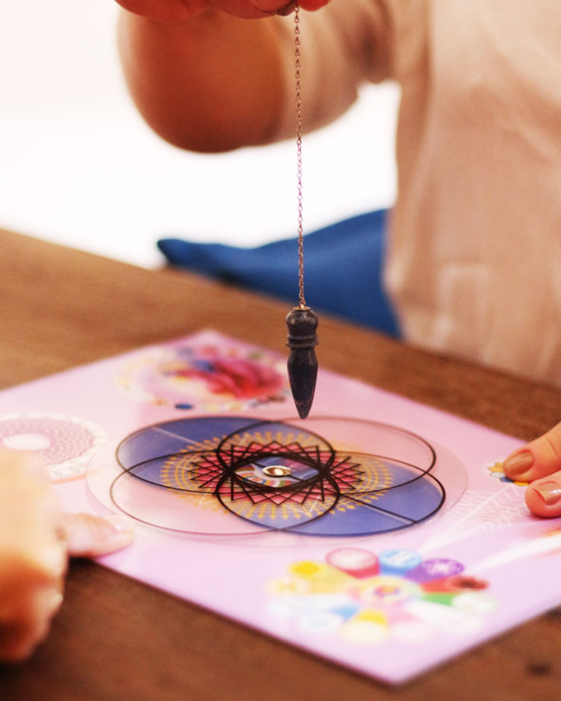

Se você sente que precisa de um momento de pausa. Que as vozes do mundo estão altas demais e você não consegue escutar a própria essência.
Para quem busca ferramentas profundas e energéticas para entender seus bloqueios, alinhar seus caminhos e resgatar a vitalidade do seu ser.
Para terapeutas, buscadores e qualquer pessoa pronta para um salto quântico de consciência em meio à energia acolhedora da natureza.
Um ambiente preparado para sua conexão profunda com a natureza e com você mesmo.
A imersão acontecerá na Chácara Vovó Sinhá (Coxipó do Ouro), em Cuiabá-MT. Um espaço amplo que se destaca pela presença revitalizante de um rio e muita área verde.







Prática que utiliza instrumentos como o pêndulo para obter respostas a perguntas previamente definidas. O operador busca perceber ou interpretar padrões sutis relacionados a uma pessoa, ambiente ou objeto.
Na prática integrativa, auxilia na investigação e seleção das essências.

Utilização de gráficos, símbolos e intenções para organizar ou direcionar determinada qualidade energética. Na prática, organiza simbolicamente a intenção terapêutica.
Organiza e potencializa as frequências para a harmonização energética.
A "Personalidade" das Flores. A essência escolhida corresponde, dentro do sistema floral, a determinados estados emocionais e padrões de comportamento humanos.
O sistema oferece essências associadas a diferentes padrões emocionais.
"A integração perfeita para o trabalho terapêutico e o autoconhecimento."
Psicanalista & Radiestesista
Apometra, Terapeuta Integrativa Complementar, especialista em Florais e Hipnóloga. Conduz processos profundos de autodescoberta e reequilíbrio energético.
Terap. Integrativa & Consteladora
Consteladora Familiar, Pós-Graduada em Neurociência, Espiritualidade e Psicologia Positiva. Une ciência e ancestralidade no cuidado sistêmico.
Parcelado em até 12 vezes de
ou à vista por R$ 1.597,00
Apenas 20 Vagas Disponíveis
O fechamento das turmas é realizado de forma humanizada e exclusiva pelo nosso suporte.
Pagamento 100% seguro. Suporte direto e humanizado.
Chácara Vovó Sinhá
Cuiabá - MT